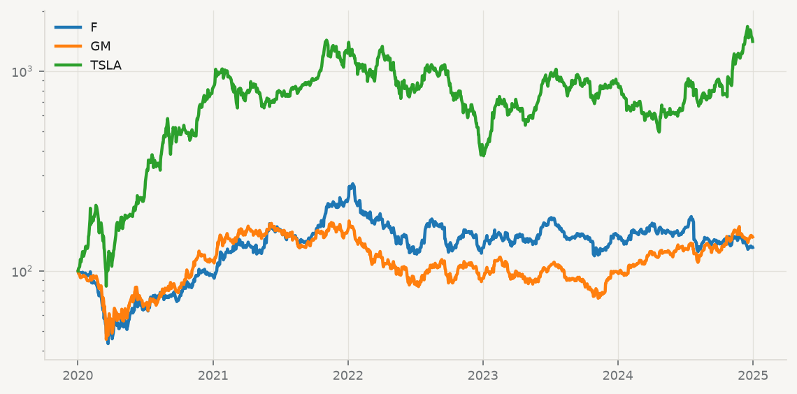

entreprises = pd.read_csv("data/entreprises.csv")
entreprises.shape(480, 12)À la séance 1, la manchette « Tesla est vraiment bonne pour l’environnement » est devenue trois questions : bonne par rapport à quoi, selon quelle mesure, et pour qui, où. Aucune des trois ne se tranche avec un seul fichier. La taille et la rentabilité de Tesla viennent de ses états financiers ; le contenu en carbone de l’électricité qui recharge ses voitures vient de statistiques nationales ; ce que les investisseurs pensent de son avenir se lit dans les cours boursiers. Chaque source est produite par une organisation différente, et servie d’une façon différente.
C’est la condition ordinaire de la recherche en gestion internationale. Bosma et van Witteloostuijn montrent que l’essor de l’apprentissage automatique dans le domaine tient moins à de nouveaux algorithmes qu’à l’arrivée de nouvelles sources de données — textes, données administratives, données en ligne — qu’il faut d’abord savoir faire entrer dans un tableau (Bosma et Witteloostuijn 2024). Ce chapitre traite de cette étape : faire venir les données jusqu’à soi, sans les abîmer en chemin, et en sachant d’où elles viennent.
| Ce qu’on veut savoir | Source | Mode d’accès |
|---|---|---|
| Taille et rentabilité de Tesla, Ford, GM | SEC, via data/entreprises.csv |
fichier CSV local |
| CO₂ par habitant, par pays | Our World in Data | URL d’un fichier |
| Ce que le marché pense de Tesla | Yahoo Finance | paquet yfinance |
| Part de l’électricité renouvelable | Banque mondiale | API web, paquet wbgapi |
| États financiers détaillés | SEC EDGAR | API avec en-tête obligatoire |
| Les données du cours, réunies | data/strategie.db |
base de données SQL |
Un fichier CSV est du texte : une ligne par observation, un séparateur entre les colonnes. Rien dans le fichier n’indique quel est ce séparateur, quel caractère marque la décimale, ni comment les lettres accentuées sont codées. pd.read_csv fait des hypothèses raisonnables — virgule, point, UTF-8 — qui conviennent au fichier du cours :
entreprises = pd.read_csv("data/entreprises.csv")
entreprises.shape(480, 12)Un Excel configuré en français fait d’autres choix : point-virgule entre les colonnes, virgule décimale, encodage Windows-1252. Le fichier data/entreprises_fr.csv contient exactement les mêmes données, enregistrées ainsi. Lu avec les hypothèses par défaut, il ne provoque aucune erreur :
mal = pd.read_csv("data/entreprises_fr.csv", encoding="cp1252")
mal.shape(480, 1)Une seule colonne au lieu de douze. pandas n’a trouvé aucune virgule séparatrice et a tout rangé dans la même case. C’est le piège le plus dangereux de l’importation : un échec silencieux. La parade est un réflexe — vérifier .shape et .dtypes après chaque lecture. Les bons paramètres règlent tout :
bon = pd.read_csv("data/entreprises_fr.csv", sep=";", decimal=",", encoding="cp1252")
print(bon.shape)
print(bon[["chiffre_affaires", "resultat_net"]].dtypes)(480, 12)
chiffre_affaires float64
resultat_net float64
dtype: objectTrois autres options servent à lire moins : nrows pour un aperçu, usecols pour ne garder que certaines colonnes, dtype pour imposer un type plutôt que de le laisser deviner. Sur les 480 lignes du cours, l’enjeu est nul ; sur un fichier de transactions de plusieurs gigaoctets, c’est la différence entre une analyse et un ordinateur figé (McKinney 2022, ch. 6).
leger = pd.read_csv("data/entreprises.csv",
usecols=["ticker", "annee", "chiffre_affaires"],
dtype={"ticker": "category", "annee": "int16"})
leger.dtypesticker category
annee int16
chiffre_affaires float64
dtype: objectpd.read_csv accepte une URL comme un nom de fichier. Mais lire en ligne à chaque exécution est une mauvaise habitude : le réseau est lent, le fichier distant peut changer sans prévenir, et certains serveurs limitent les requêtes. La règle du cours est de télécharger une fois et de relire une copie locale. Une petite fonction suffit :
from pathlib import Path
CACHE = Path("data/cache")
CACHE.mkdir(parents=True, exist_ok=True)
def charger(nom, telecharger):
"""Relit data/cache/<nom>.parquet s'il existe ; sinon télécharge, enregistre, renvoie."""
fichier = CACHE / f"{nom}.parquet"
if fichier.exists():
return pd.read_parquet(fichier)
df = telecharger()
df.to_parquet(fichier)
return dfL’argument telecharger est une fonction, qui ne s’exécute que si la copie locale manque. Our World in Data publie les émissions de CO₂ de tous les pays dans un seul fichier de 79 colonnes ; on n’en garde que cinq :
URL_CO2 = "https://raw.githubusercontent.com/owid/co2-data/master/owid-co2-data.csv"
co2 = charger("owid_co2", lambda: pd.read_csv(
URL_CO2, usecols=["country", "year", "iso_code", "co2_per_capita", "share_global_co2"]))
pays = ["USA", "CAN", "CHN", "DEU", "NOR", "POL"]
co2[co2["iso_code"].isin(pays) & (co2["year"] == 2023)]| country | year | iso_code | co2_per_capita | share_global_co2 | |
|---|---|---|---|---|---|
| 8876 | Canada | 2023 | CAN | 13.880 | 1.432 |
| 9932 | China | 2023 | CHN | 8.556 | 31.953 |
| 18318 | Germany | 2023 | DEU | 7.023 | 1.559 |
| 34909 | Norway | 2023 | NOR | 7.043 | 0.102 |
| 37609 | Poland | 2023 | POL | 7.307 | 0.744 |
| 48006 | United States | 2023 | USA | 14.319 | 12.911 |
Le piège des certificats sur macOS. Avec le Python de python.org, pd.read_csv(url) peut échouer avec CERTIFICATE_VERIFY_FAILED alors que requests.get(url) fonctionne : requests apporte ses propres certificats, pandas utilise ceux du système. Le correctif est d’exécuter une fois Install Certificates.command, dans le dossier Applications/Python 3.x.
Les pages web contiennent aussi des tableaux. pd.read_html les renvoie tous, sous forme de liste ; il faut un User-Agent pour que Wikipédia accepte la requête :
URL_WIKI = "https://en.wikipedia.org/wiki/List_of_largest_automotive_companies_by_revenue"
constructeurs = charger("wiki_constructeurs", lambda: pd.read_html(
URL_WIKI, storage_options={"User-Agent": "Mozilla/5.0"})[0])
constructeurs.head(5)| No. | Company | Industry | Revenue (in billion US$) | Headquarters | |
|---|---|---|---|---|---|
| 0 | 1 | Apple | Electronics | 391.035 | United States |
| 1 | 2 | Volkswagen Group | Automotive | 351.093 | Germany |
| 2 | 3 | Toyota | Automotive | 315.110 | Japan |
| 3 | 4 | Samsung Electronics | Electronics | 220.637 | South Korea |
| 4 | 5 | Foxconn | Electronics | 213.699 | Taiwan |
Wikipédia sert à trouver une source, non à la citer : ces chiffres recopient des rapports annuels, et c’est le rapport annuel qu’un travail sérieux doit citer.
Certaines sources ont un paquet Python qui cache les détails de l’accès. yfinance lit les cours boursiers de Yahoo Finance ; auto_adjust=True corrige les cours pour les dividendes et les fractionnements d’actions.
import yfinance as yf
from plotstyle import setup
plt = setup()
prix = charger("cours_auto", lambda: yf.download(
["TSLA", "F", "GM"], start="2020-01-01", end="2025-01-01",
auto_adjust=True, progress=False)["Close"])
base100 = prix / prix.iloc[0] * 100
fig, ax = plt.subplots()
for t in base100.columns:
ax.plot(base100.index, base100[t], label=t)
ax.set_yscale("log")
ax.legend(frameon=False)
plt.show()
rendements = prix.resample("YE").last().pct_change().dropna()
rendements.round(2)| Ticker | F | GM | TSLA |
|---|---|---|---|
| Date | |||
| 2021-12-31 | 1.37 | 0.41 | 0.50 |
| 2022-12-31 | -0.42 | -0.42 | -0.65 |
| 2023-12-31 | 0.16 | 0.08 | 1.02 |
| 2024-12-31 | -0.13 | 0.50 | 0.63 |
Le rendement annuel nuance déjà la manchette « le marché croit en Tesla » : en 2021, l’action de Ford a progressé davantage que celle de Tesla. yfinance n’est pas un produit officiel, et les conditions de Yahoo interdisent de redistribuer ces données ; pour une recherche publiée, les bases de référence sont CRSP et Compustat.
Le paquet wbgapi fait de même pour la Banque mondiale :
import wbgapi as wb
co2_hab = charger("wb_co2_hab", lambda: wb.data.DataFrame(
"EN.GHG.CO2.PC.CE.AR5", ["USA", "CAN", "CHN", "NOR", "DEU"],
time=range(2018, 2023)).reset_index())
co2_hab.round(1)| economy | YR2018 | YR2019 | YR2020 | YR2021 | YR2022 | |
|---|---|---|---|---|---|---|
| 0 | CAN | 16.5 | 16.2 | 14.4 | 14.7 | 14.8 |
| 1 | CHN | 8.2 | 8.4 | 8.5 | 8.9 | 8.9 |
| 2 | DEU | 9.0 | 8.4 | 7.7 | 8.1 | 7.9 |
| 3 | NOR | 8.8 | 8.5 | 8.1 | 8.2 | 8.0 |
| 4 | USA | 15.6 | 15.0 | 13.5 | 14.3 | 14.4 |
Une API web est une adresse qui répond avec des données plutôt qu’avec une page. La requête précise une ressource (quels pays, quel indicateur), des paramètres (années, format) et parfois des en-têtes (qui demande, avec quelle clé). La réponse porte un code de statut — 200 pour un succès, 404 pour une ressource introuvable, 429 pour trop de requêtes — et, le plus souvent, du JSON : des listes et des dictionnaires imbriqués.
import requests
url = "https://api.worldbank.org/v2/country/CAN;USA;CHN;NOR;POL/indicator/EG.ELC.RNEW.ZS"
reponse = requests.get(url, params={"format": "json", "date": "2015:2022", "per_page": 100},
timeout=30)
print(reponse.status_code)
meta, observations = reponse.json()
print(meta)200
{'page': 1, 'pages': 1, 'per_page': 100, 'total': 40, 'sourceid': '2', 'lastupdated': '2026-10-08'}La Banque mondiale renvoie une liste de deux éléments : les métadonnées, puis les observations. Une compréhension de liste les range dans un tableau :
elec = pd.DataFrame([{"iso3": o["countryiso3code"], "annee": int(o["date"]),
"renouv_pct": o["value"]} for o in observations])
elec.pivot(index="annee", columns="iso3", values="renouv_pct").round(1)| iso3 | CAN | CHN | NOR | POL | USA |
|---|---|---|---|---|---|
| annee | |||||
| 2015 | 64.1 | 23.9 | 97.7 | 14.2 | 13.6 |
| 2016 | 65.0 | 25.1 | 97.8 | 14.0 | 15.3 |
| 2017 | 66.6 | 25.0 | 97.8 | 14.4 | 17.3 |
| 2018 | 65.9 | 25.8 | 97.8 | 13.0 | 17.2 |
| 2019 | 65.9 | 26.9 | 97.8 | 16.0 | 17.9 |
| 2020 | 67.1 | 28.1 | 98.4 | 18.4 | 19.9 |
| 2021 | 67.0 | 28.4 | 99.1 | 17.5 | 20.3 |
| 2022 | NaN | NaN | NaN | NaN | NaN |
Le tableau répond à la troisième question de la séance 1 : une voiture électrique branchée au réseau norvégien ou canadien roule à l’électricité renouvelable bien plus qu’en Chine, en Pologne ou aux États-Unis. Il montre aussi une limite : la dernière ligne est vide, parce que la série publiée s’arrête en 2021. Une source a toujours un retard, et une analyse doit le dire.
Quand une réponse dépasse une page, l’API l’indique dans ses métadonnées (pages) et il faut boucler. La SEC, elle, exige que chaque programme s’identifie par un User-Agent qui contient un nom et un courriel. On le lit dans une variable d’environnement, pour qu’il n’apparaisse jamais dans un code partagé :
ua = os.environ.get("SEC_USER_AGENT", "HEC Montreal MGMT60XXX course")
def faits_tesla():
r = requests.get("https://data.sec.gov/api/xbrl/companyfacts/CIK0001318605.json",
headers={"User-Agent": ua}, timeout=60)
r.raise_for_status()
ventes = r.json()["facts"]["us-gaap"]["RevenueFromContractWithCustomerExcludingAssessedTax"]
return pd.DataFrame(ventes["units"]["USD"])
brut = charger("sec_tesla_ventes", faits_tesla)
annuel = brut[brut["frame"].fillna("").str.fullmatch(r"CY\d{4}")]
annuel.assign(ventes_milliards=annuel["val"] / 1e9)[["frame", "ventes_milliards", "form"]].tail(4)| frame | ventes_milliards | form | |
|---|---|---|---|
| 10 | CY2022 | 81.462 | 10-K |
| 20 | CY2023 | 96.773 | 10-K |
| 32 | CY2024 | 97.690 | 10-K |
| 43 | CY2025 | 94.827 | 10-K |
Une même année de ventes figure dans plusieurs dépôts successifs ; le champ frame désigne la valeur retenue pour chaque année civile. C’est la logique de scripts/build_course_data.py, qui a construit data/entreprises.csv.
Les clés d’API obéissent à la même règle que le courriel : elles vivent dans une variable d’environnement (os.environ["FRED_API_KEY"]), jamais dans un fichier versionné. Une clé publiée sur GitHub est repérée par des robots en quelques minutes ; il faut alors la révoquer.
Dans une entreprise, les données vivent rarement dans des fichiers : elles sont dans des bases, qu’on interroge en SQL. Le fichier data/strategie.db est une base SQLite qui contient les trois tables du cours. pd.read_sql envoie la requête et renvoie un DataFrame.
import sqlite3
con = sqlite3.connect("data/strategie.db")
pd.read_sql("""
SELECT secteur,
COUNT(DISTINCT ticker) AS n,
ROUND(SUM(chiffre_affaires) / 1000, 1) AS ventes_milliards,
ROUND(AVG(resultat_net * 1.0 / chiffre_affaires) * 100, 1) AS marge_moy_pct
FROM entreprises
WHERE annee = 2023
GROUP BY secteur
ORDER BY ventes_milliards DESC
""", con)| secteur | n | ventes_milliards | marge_moy_pct | |
|---|---|---|---|---|
| 0 | Commerce de détail | 4 | 1567.1 | 3.5 |
| 1 | Technologie | 7 | 1214.5 | 25.2 |
| 2 | Énergie | 3 | 590.0 | 14.6 |
| 3 | Automobile | 3 | 430.6 | 8.1 |
| 4 | Biens de consommation | 4 | 270.6 | 15.6 |
| 5 | Pharmaceutique | 4 | 230.3 | 15.4 |
| 6 | Industrie | 4 | 202.5 | 0.3 |
| 7 | Restauration | 2 | 61.5 | 22.3 |
| 8 | Médias et divertissement | 1 | 33.7 | 16.0 |
Une jointure relie deux tables par leurs clés — ici le pays du siège et l’année :
pd.read_sql("""
SELECT e.entreprise, e.chiffre_affaires / 1000 AS ventes_milliards, p.pib_milliards_usd,
ROUND(e.chiffre_affaires / 1000 / p.pib_milliards_usd * 100, 2) AS pct_pib
FROM entreprises AS e
JOIN pays AS p ON p.iso3 = e.pays_siege AND p.annee = e.annee
WHERE e.ticker IN (?, ?, ?) AND e.annee = ?
""", con, params=("TSLA", "AAPL", "WMT", 2023))| entreprise | ventes_milliards | pib_milliards_usd | pct_pib | |
|---|---|---|---|---|
| 0 | Tesla | 96.773 | 27811.52 | 0.35 |
| 1 | Apple | 383.285 | 27811.52 | 1.38 |
| 2 | Walmart | 642.637 | 27811.52 | 2.31 |
Les valeurs filtrées passent par params= et des ?, jamais par du texte collé dans la requête : un nom comme « McDonald’s » casserait la requête, et un texte malveillant pourrait la détourner.
con.close()DuckDB va plus loin : il interroge un fichier CSV ou parquet comme une table, sans base à créer.
import duckdb
duckdb.sql("""
SELECT ticker, chiffre_affaires, resultat_net
FROM 'data/entreprises.csv' WHERE annee = 2024
ORDER BY chiffre_affaires DESC LIMIT 5
""").df()| ticker | chiffre_affaires | resultat_net | |
|---|---|---|---|
| 0 | WMT | 674538.0 | 19436.0 |
| 1 | AMZN | 637959.0 | 59248.0 |
| 2 | AAPL | 391035.0 | 93736.0 |
| 3 | GOOGL | 350018.0 | 100118.0 |
| 4 | XOM | 349585.0 | 33680.0 |
Le format parquet conserve les types et occupe moins de place ; le CSV reste lisible par tous. Le cours garde ses copies de travail en parquet et remet ses résultats en CSV.
Path("sorties").mkdir(exist_ok=True)
co2.to_csv("sorties/co2.csv", index=False)
co2.to_parquet("sorties/co2.parquet")
{f: round(Path(f).stat().st_size / 1e6, 2) for f in ["sorties/co2.csv", "sorties/co2.parquet"]}{'sorties/co2.csv': 1.36, 'sorties/co2.parquet': 0.17}Reste l’essentiel, qui ne s’écrit pas en Python : la fiche de provenance. Pour chaque source, le producteur, le mode d’accès, la date d’accès, l’unité, la licence et la dernière année disponible. Elle rend le travail vérifiable par un tiers, et par soi-même six semaines plus tard. La séance 4 assemblera ces sources en un seul tableau, ce qui suppose de savoir exactement ce que chacune mesure (Wickham 2014).
.shape et .dtypes : l’échec le plus grave est silencieux.sep, decimal, encoding règlent presque tous les CSV ; usecols, dtype, nrows allègent.params= protège la requête.